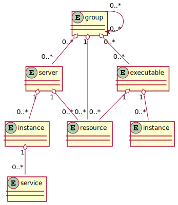

user particles¶
This section aims to provide an overview of the fundamental user particles of casual and their relationships.
That is, the entities that are involved from a user code perspective, during runtime.
particles¶
The following diagram illustrates the relationship between the user particles

resource¶
Configuration of a specific
resourceserversandexecutablesuses this to “connect” to resources (if they’re built with a resource)
group¶
Groups
serverandexecutables.Dependencies to other
groupsDetermine the boot and shutdown ordering
Has
0..*resourcesdependencies, which give members of the group implicit dependencies
server¶
executable that
casualcan communicate whith, i.e. it has a message pump.Scales with
instancesIs a member of
0..*groups.Has
0..*explicitresourcesdependencies
instance (server)¶
Running process of a given
serverAdvertises
0..*servicesIs a member of
0..*groups.
executable¶
Arbitary executable
casualcommunicates only withSIGINTto shutdown the executableHas
0..*explicitresourcesdependencies
instance (executable)¶
Running process of a given
executable
service¶
XATMIserviceentry point for
0..*instances(that could be from differentservers)